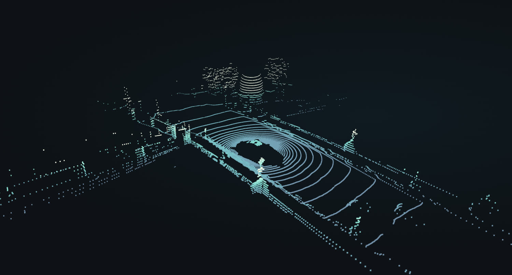

nuScenes LiDAR sweep · drag to orbitScansione LiDAR nuScenes · trascina per ruotare
Andrea Mastroberti
Teaching machines to see without human annotation. Insegno alle macchine a vedere senza annotazione umana.
MS Computer Science, Politecnico di Milano Laurea Magistrale in Computer Science, Politecnico di Milano
NowAttualmente
MS thesis with AIDA and Niulinx — joint self-supervised pretraining on unlabelled LiDAR and camera data. Tesi magistrale con AIDA e Niulinx — pretraining self-supervised congiunto su dati LiDAR e camera non etichettati.
Graduating December 2026. Looking for ML and robotics roles. Laurea a dicembre 2026. Cerco ruoli in ML e robotica.
MS Thesis · AIDA / Niulinx · In ProgressTesi magistrale · AIDA / Niulinx · In corso
Multimodal pretraining for autonomous drivingPretraining multimodale per la guida autonoma
3D bounding box annotations are expensive, but raw driving logs are plentiful. My thesis adapts UniTR to pretrain a single transformer backbone directly on paired, unlabelled LiDAR and camera streams. Annotare bounding box 3D è costoso, mentre i dati di guida grezzi abbondano. La mia tesi adatta UniTR per pre-addestrare un'unica backbone transformer direttamente su LiDAR e camera accoppiati e non etichettati.
The core work is handling the structural asymmetry between sparse 3D point clouds and dense 2D images, avoiding representation collapse during self-supervised training, and designing compute-efficient evaluation benchmarks. Il fulcro del lavoro è gestire l'asimmetria strutturale fra nuvole di punti 3D sparse e immagini 2D dense, evitare il collasso delle rappresentazioni durante il training self-supervised e progettare benchmark di valutazione efficienti dal punto di vista computazionale.
While tested on driving data, learning unified metric-RGB representations applies equally well to indoor robotics and spatial computing. Anche se testato su dati di guida, imparare rappresentazioni unificate vale altrettanto per la robotica indoor e per lo spatial computing.
Google Summer of Code 2024 · FFmpeg
Fast perceptual metrics in FFmpegMetriche percettive veloci in FFmpeg
Implemented the enhanced SSIM (eSSIM) filter in C for FFmpeg. Implementato in C il filtro enhanced SSIM (eSSIM) per FFmpeg.
The standard sliding-window implementation runs in O(mnk²) for an m × n frame and a k × k window. Rewriting the statistics with summed-area tables reduced this to O(mn), requiring just four memory lookups per window regardless of its size.
L'implementazione standard a finestra scorrevole costa O(mnk²) per un frame m × n e una finestra k × k. Riscrivendo le statistiche con summed-area table il costo scende a O(mn): quattro accessi in memoria per finestra, indipendentemente dalla sua dimensione.
Added multithreading and configurable pooling, and upstreamed the patch to ffmpeg-devel.
Aggiunti multithreading e pooling configurabile, e proposta la patch upstream su ffmpeg-devel.
Leonardo Drone Contest 2025 · 2nd Place NationwideLeonardo Drone Contest 2025 · 2° posto nazionale
Autonomous multi-agent target searchNavigazione autonoma multi-agente
A ground vehicle, a drone, and a fixed Pan-Tilt-Zoom (PTZ) camera cooperating to map an unknown arena and locate targets with zero human input. Un veicolo terrestre, un drone e una camera Pan-Tilt-Zoom (PTZ) fissa che cooperano per mappare un'arena sconosciuta e localizzare target senza alcun intervento umano.
I built the PTZ vision system: an active search routine to scan the field, detect candidate 30 × 30 cm QR codes, and dynamically zoom in to decode and localize them in real time. Ho realizzato il sistema di visione PTZ: una routine di ricerca attiva che scandaglia il campo, individua candidati QR code da 30 × 30 cm e zooma dinamicamente per decodificarli e localizzarli in tempo reale.
Lab Project · Reinforcement Learning · RoboticsProgetto di laboratorio · Reinforcement Learning · Robotica
Furuta pendulum from scratchPendolo di Furuta da zero
A rotary inverted pendulum built end to end: 3D-printed mechanics, motor control circuitry, and embedded policy inference on a Raspberry Pi. Un pendolo inverso a rotazione costruito end to end: meccanica stampata in 3D, elettronica di controllo del motore e inferenza della policy a bordo di un Raspberry Pi.
Trained a swing-up and balance policy in simulation using Stable-Baselines3 (PPO), then tuned domain randomization parameters to bridge the sim-to-real gap on the physical rig. Policy di swing-up e bilanciamento addestrata in simulazione con Stable-Baselines3 (PPO), poi taratura dei parametri di domain randomization per colmare il divario sim-to-real sul banco fisico.